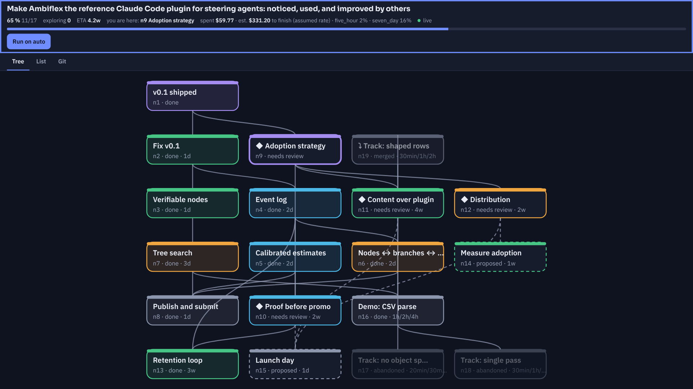
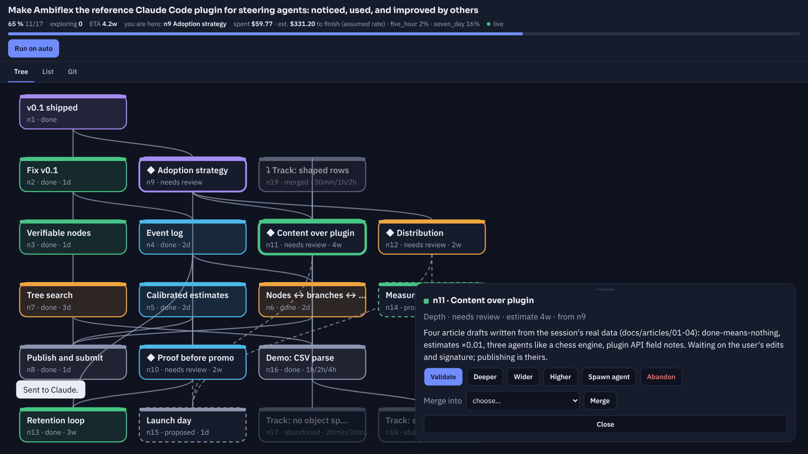

Then I ran the benchmark myself. 334 ms down to 44.

calibration ×0.01 a "2 day" node, done in 10 min
Cost and time on screen before and during. Estimates calibrated against real timings.
claude — ImadeBenToumAI — auto mode
[tree] Auto mode, turn 14/40. Work on n7 "Tree search". Budget $59 of $120.Working on n7. Spawning three agents, one worktree branch each. n17 Track: no object spread SCORE 3.15 n18 Track: single pass SCORE 6.66 n19 Track: shaped rows SCORE 7.30 ← kept, mergedn7 done. Verified by: independent benchmark, 7.38×.[tree] Next open node: n8 "Publish and submit". Hand-over in 1 turn.▍
After each turn, the plugin hands Claude the next open node.

And I steer from anywhere. Validate, go deeper, go wider, prune.